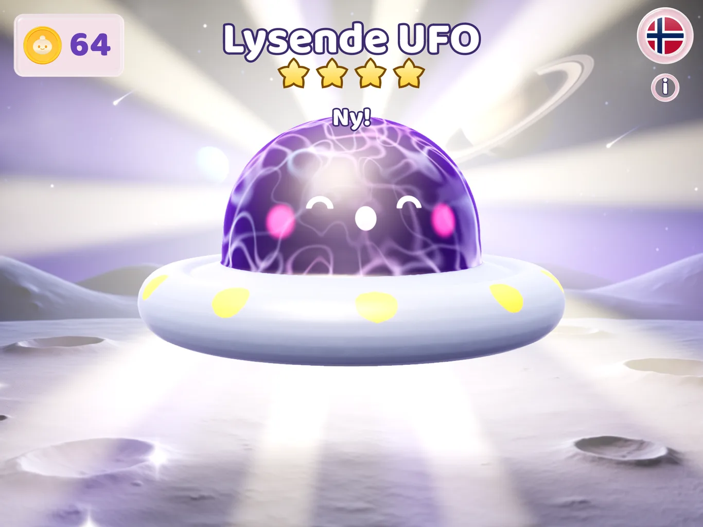
Åpne en eske og se hvem som er inni
Riv av båndet, klipp opp plasten og løft lokket. Lyset strømmer ut, og der er den: en ny squishy. Hver eske er en liten overraskelse, og de sjeldne lyser.

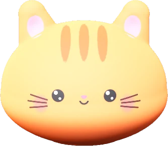

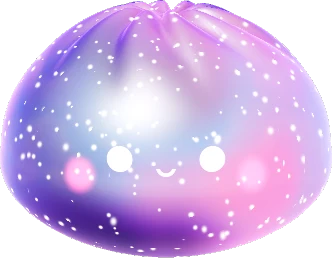
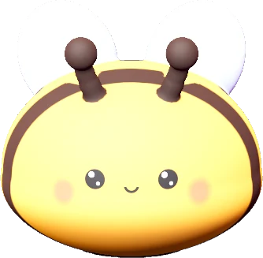
Åpne esken. Klem det som er inni.
Et mykt og rolig samlespill for barn fra 3 til 8 år. Over 90 squishies å finne, klemme og stelle med.
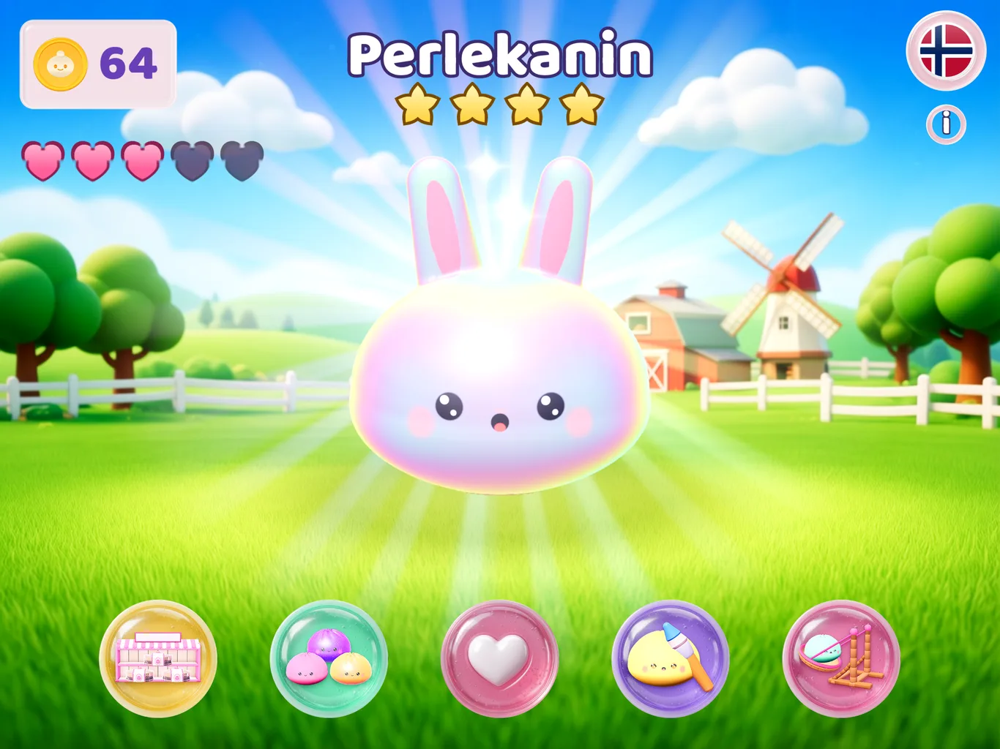

Riv av båndet, klipp opp plasten og løft lokket. Lyset strømmer ut, og der er den: en ny squishy. Hver eske er en liten overraskelse, og de sjeldne lyser.
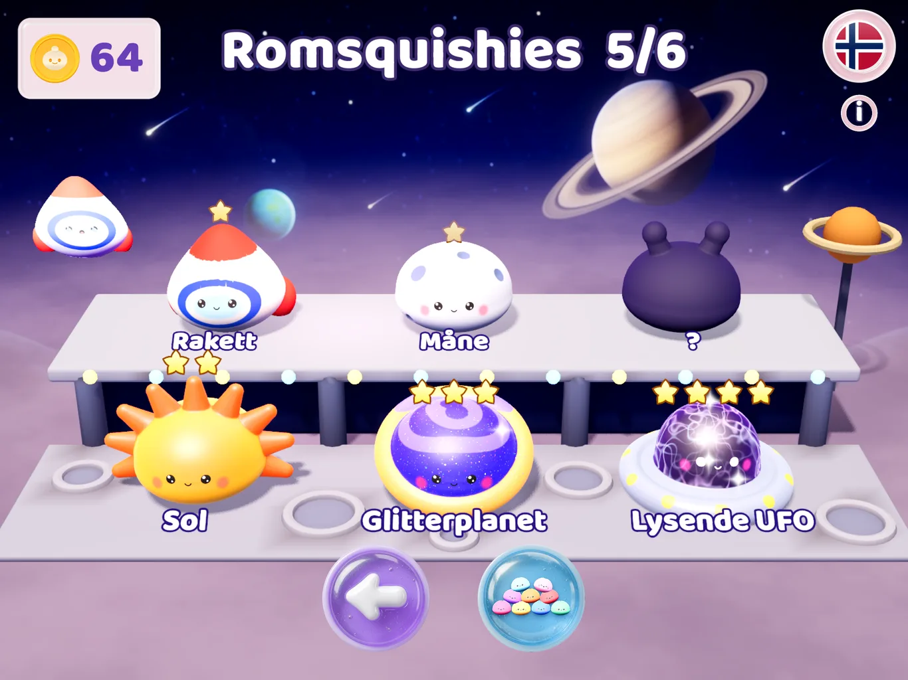
Fjorten serier med hver sin hylle: dyr, mat, hav, verdensrom, dinosaurer, småkryp, fugler, sport, fest og flere. Stjernene viser hvor sjelden en squishy er, fra én stjerne til fire.
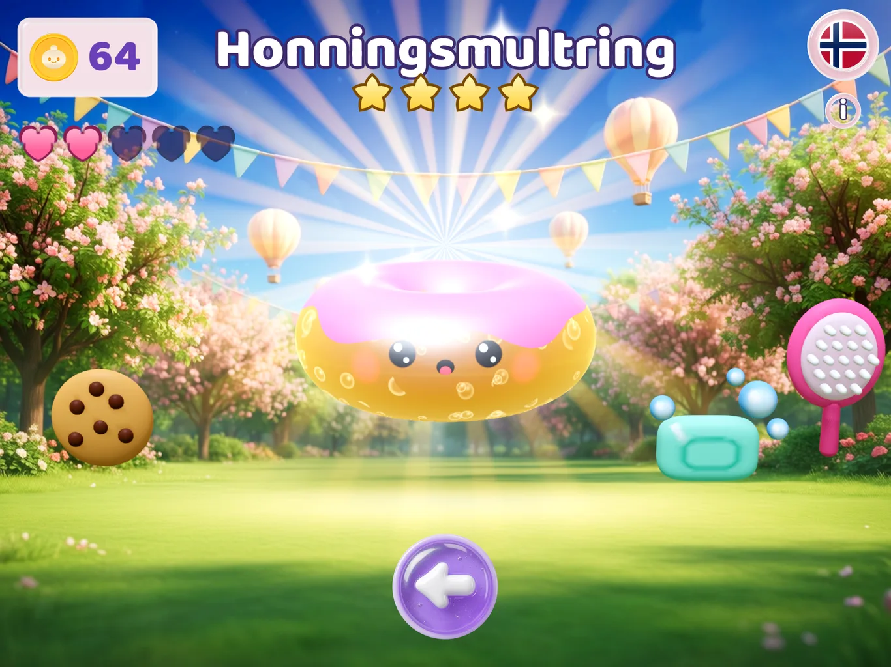
Trykk, dra og kast en squishy, og den disser som gelé. Gi den en kjeks, vask den med såpe, børst den. Ingenting må gjøres, og ingenting går tapt. Jo mer dere leker sammen, jo gladere blir den i deg.
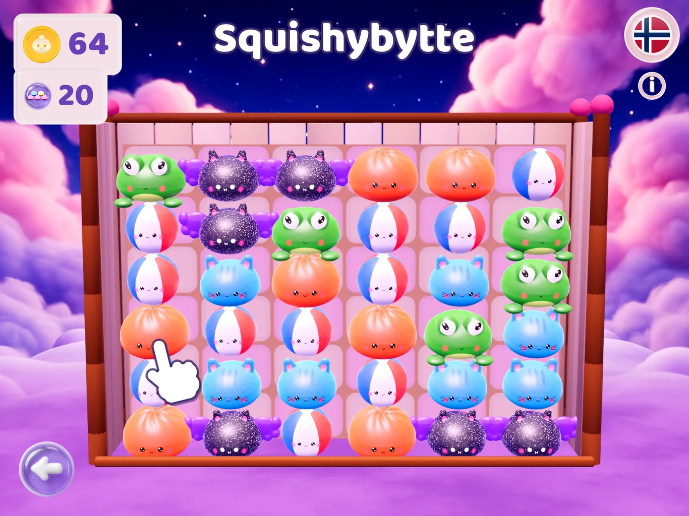
Tre på rad, stable tårn, fang, finn par, hopp på skyer, sprett opp, fly og skyt ut. Alle spillene gir mynter, og mynter kjøper nye esker. Mynter får du bare ved å spille.
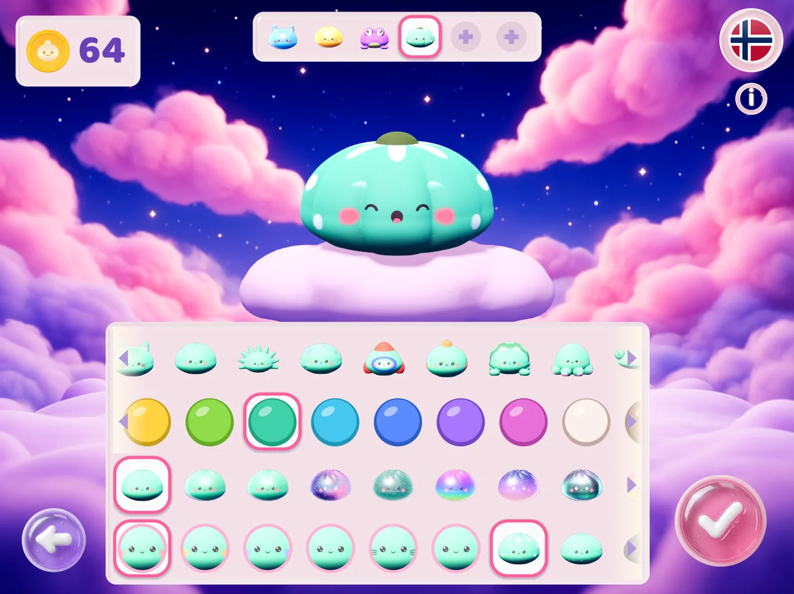
Velg form, farge, overflate og ansikt i verkstedet, så blir din egen squishy med i samlingen.
Et barnespill laget slik vi mener barnespill bør være.
Du kjøper spillet i butikken, og det er alt. Ingenting å kjøpe i spillet, ingen abonnement.
Ingen reklame av noe slag. Den ene lenken ut av spillet, til personvernerklæringen, ligger bak en voksensjekk.
Ingen kontoer, ingen analyse og ingen data samles inn. Spillet virker uten internett.
Bildeknapper og en pekende hånd viser hva man gjør, så de minste kan spille alene.
Ingen daglige oppgaver, ingen rekker å holde ved like, og en samling som aldri blir mindre. Spill i to minutter eller tjue.
Trykk på flagget for å bytte språk.
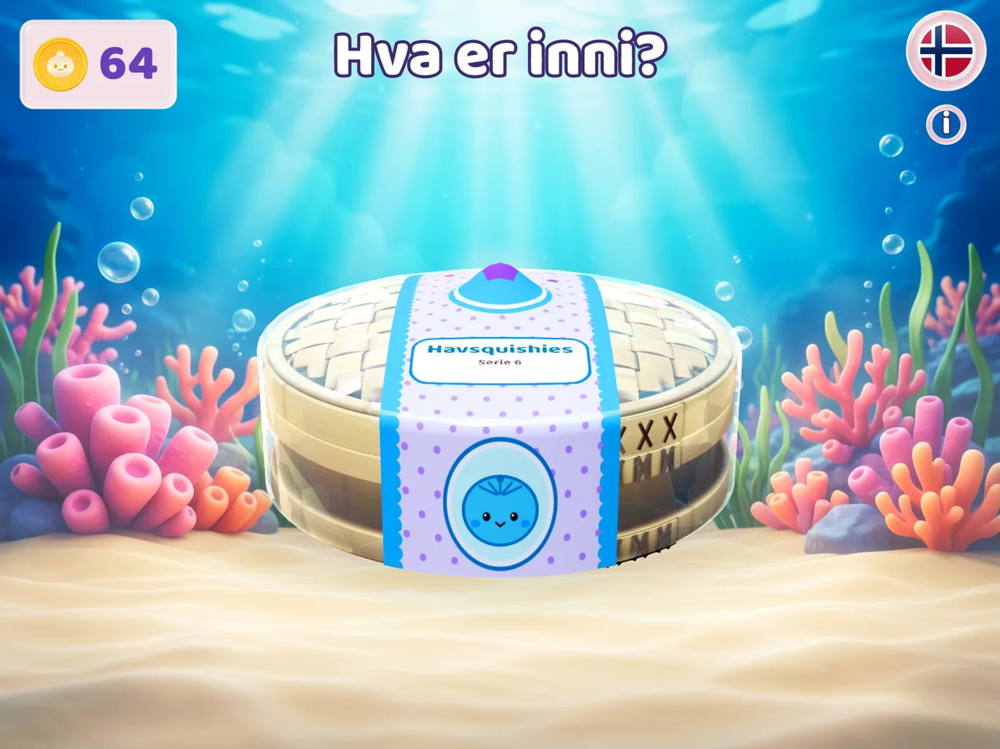
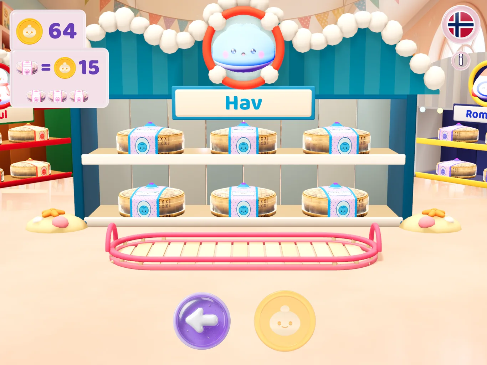
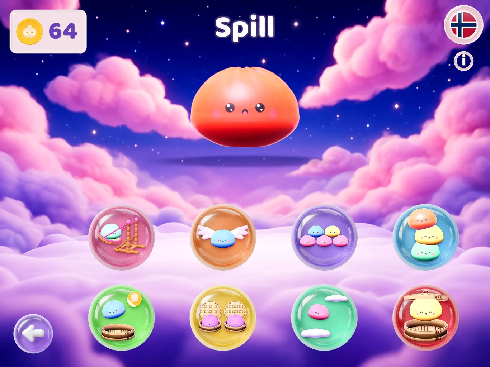
Squishies er et samlespill for små barn. Barnet åpner esker, finner myke lekefigurer som heter squishies, klemmer dem, steller med dem og spiller små spill med dem. Det er laget av Snellingen Studio i Norge.
Det er laget for barn fra 3 til 8 år. Barnet trenger ikke å kunne lese: knappene er bilder, og en pekende hånd viser hva man gjør.
iPad (iPadOS 17 eller nyere) og Android-nettbrett og -telefoner.
Nei. Spillet betales én gang i butikken. Det har ingen reklame, ingen kjøp i appen og ingen abonnement. Myntene i spillet tjenes ved å spille og kan ikke kjøpes.
Nei. Spillet har ingen kontoer og ingen analyse, og det sender ingenting fra enheten. Fremgangen lagres bare på enheten.
Nei. Når det er installert, virker det helt uten nett.
Over 90, i fjorten serier og fire grader av sjeldenhet. Barna kan også lage sine egne i verkstedet.
Norsk og engelsk.
Snart, i App Store og Google Play. Lenkene kommer på denne siden.